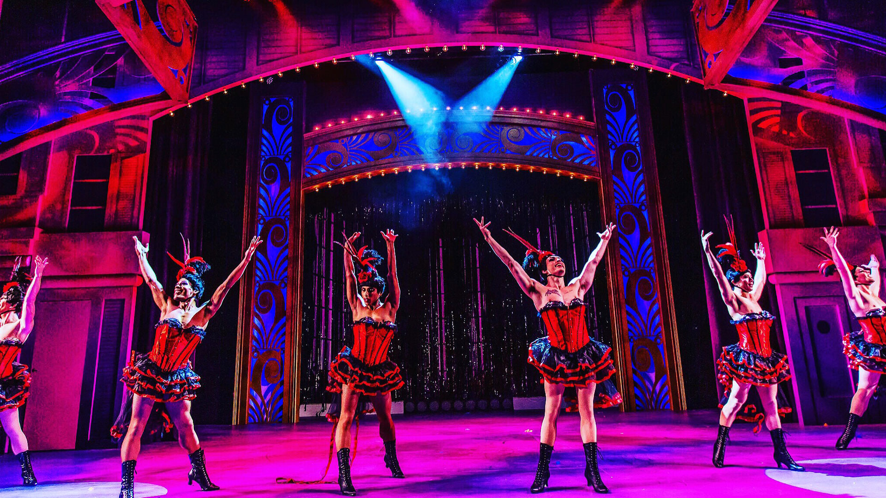
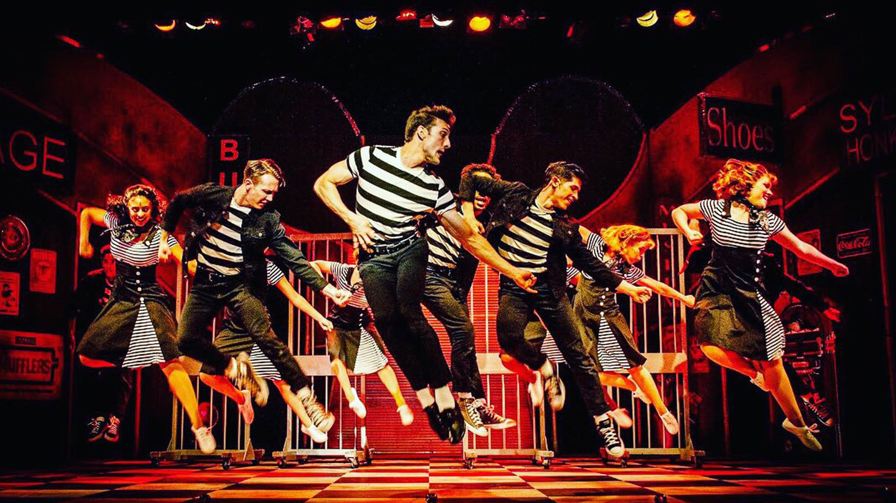

Making musicals has been my favorite thing since I was 10 years old! What started as home-made productions performed for an audience of Beanie Babies evolved into my fulltime career and lifelong passion.
After spending a few years dancing in musicals, I finally made the transition to working behind the scenes as a director and choreographer. I loved dissecting methods of story telling, collaborating with theatre artists, and marrying music, dance, acting, and desing into a cohesive show.
 To me the magic of theatre lies in the community it creates. Whether it's the family of technicians, staff, and creatives bonding while creating the piece or the connection an audience forms with their fellow patrons while experiencing the show, theatre brings people together in a way that no other artform can. Live performance is a completely unique artistic experience and I cannot wait until it's safe to resume our creating!
To me the magic of theatre lies in the community it creates. Whether it's the family of technicians, staff, and creatives bonding while creating the piece or the connection an audience forms with their fellow patrons while experiencing the show, theatre brings people together in a way that no other artform can. Live performance is a completely unique artistic experience and I cannot wait until it's safe to resume our creating!
